How to Build a Large Language Model From Scratch (No Supercomputer Required)
What Even Is a Language Model?
By now, you’ve probably heard of ChatGPT, Claude, or Gemini. What most people call AI or artificial intelligence is really something called a large language model.
These have taken the world by storm and are programs that can write essays, answer questions, and even have conversations. They seem like magic, but they are not. At their core, every single one of these models does exactly one thing:
Given some text, predict the next character (or word).
Yep, that’s it. The entire foundation of AI that is changing the world boils down to: “what comes next?”
For example, if I type “The cat sat on the ___”, you’d probably guess “mat” or “floor.” A language model does the same thing, except it does it with math. In this article, I will build one from absolute scratch using nothing but basic Python and NumPy. No PyTorch. No TensorFlow. No GPU. Just raw math on a laptop.
I trained mine on Frankenstein by Mary Shelley, the full novel, about 419,000 characters long. Let’s walk through every step of how it works.
Step 1: Getting the Text
Every language model starts with data — text for it to learn from. We used the full text of Frankenstein, downloaded free from Project Gutenberg.
The raw file is 438,806 characters long, but that includes legal disclaimers and licensing text that Project Gutenberg wraps around every book. We don't want the model learning copyright notices, so we strip all of that away by finding the *** START OF and *** END OF markers and keeping only what's between them.
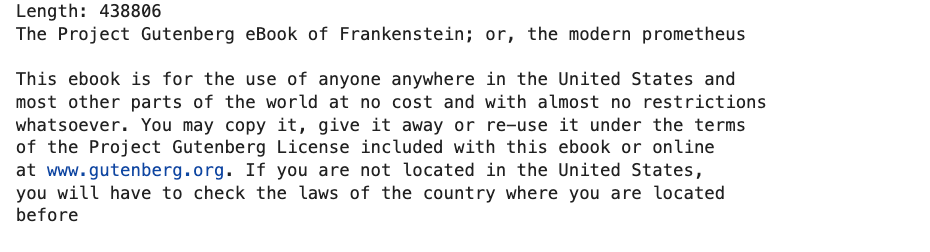
After cleaning: 419,409 characters of pure Mary Shelley.
Step 2: Tokenization — Teaching the Computer to Read
Here's the problem: computers don't understand letters. They understand numbers. So before we can do anything, we need to convert every character in the book into a number.
Building the Vocabulary
First, we scan the entire text and find every unique character that appears. In Frankenstein, there are exactly 84 unique characters. These include:
- Lowercase letters: a, b, c, ... z
- Uppercase letters: A, B, C, ... Y (not every letter appears capitalized)
- Punctuation: periods, commas, semicolons, exclamation marks, question marks
- Spaces and newlines
- Some special characters: em-dashes (—), smart quotes (" " ' '), and a few accented letters (é, è, ê) from the French phrases Shelley sprinkled in
We sort these into a consistent order and assign each one a number. This gives us two lookup tables:
- stoi (string-to-integer): Given a character, what's its number?
- itos (integer-to-string): Given a number, what character is it?
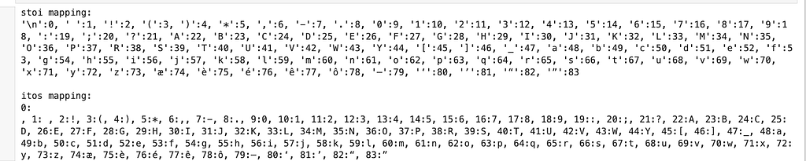
For example, in our model, some character IDs are:
- '\n' → 0
- ' ' → 1
- 'a' → 48
- 'e' → 52
- 't' → 67
- 'T' → 40
This means the word "THE" becomes [40, 29, 26], while "the" becomes [67, 55, 52]. Note that uppercase and lowercase letters are treated as completely separate tokens — the model has to learn by itself that they are related.
Here’s a real snippet from our data showing this concept:
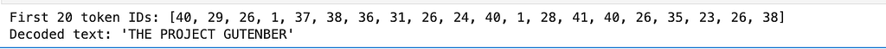
With these mappings, we convert the entire 419,409-character novel into a list of 419,409 integers. The first 20 tokens of our encoded text are:
Why Character-Level?
Real LLMs like GPT-4 don't tokenize character by character. They use subword tokenization (called BPE — Byte Pair Encoding), which breaks text into chunks like "un" + "believ" + "able." This is more efficient because it keeps the vocabulary manageable (around 50,000–100,000 tokens) while still handling rare words gracefully.
We're using character-level tokenization because it's the simplest possible approach. Our vocabulary is just 84 tokens. It makes everything easier to understand, even though it means the model has to work harder — it needs to learn how to spell words from individual letters, not just predict whole word chunks.
Our goal was to train this model in just a few hours on a MacBook, without any access to GPUs. In contrast, models like GPT-4 are trained on hundreds of billions of tokens using massive compute clusters with thousands of GPUs or TPUs running for days, weeks, or even months.
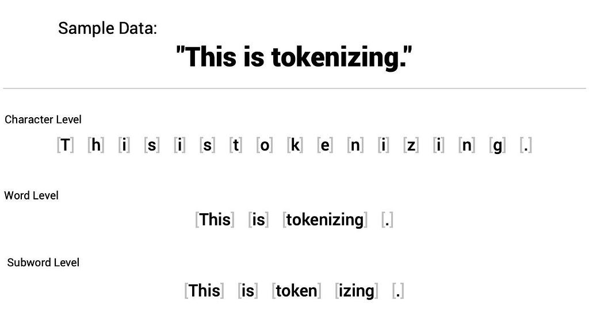
Step 3: Creating Training Data — The Sliding Window
Now we need to turn our long list of numbers into actual training examples. The concept is simple:
Show the model a window of characters → Ask it to predict the next one.
We chose a block size of 8 for our first model — meaning the model sees 8 characters of context at a time. We slide this window across the entire text, one character at a time:
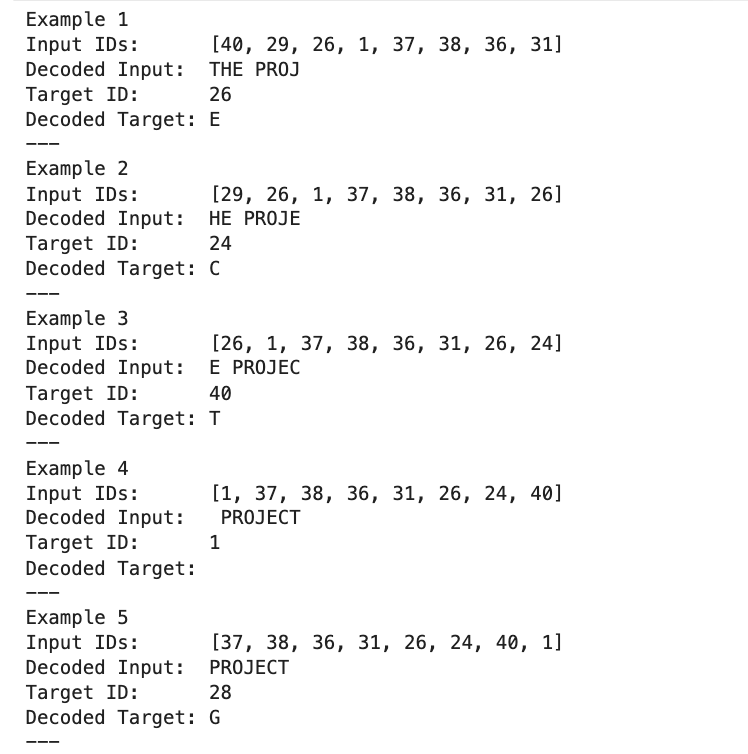
Each row is one training example. The model's job: given the input, predict the target.
From our 419,409-character text, this produces 419,401 training examples. We can simply think of it as 400,000 tiny quizzes for the model to learn from.
Step 4: The Neural Network — How the Model Actually Works
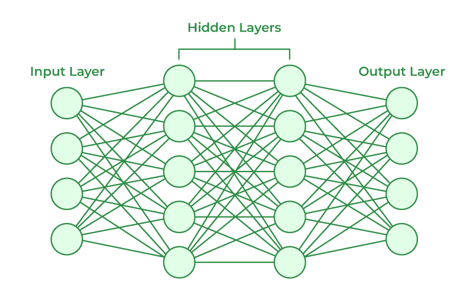
Firstly, what is a Neural Network?
A neural network is a type of computer program inspired by the brain. It’s made up of layers of “neurons” that take input, perform calculations, and pass the results to the next layer. By adjusting the connections between neurons, the network can learn patterns in data and make predictions.
This is where the real magic happens. We build a simple neural network with three layers. Think of it as a pipeline:
Characters → Embeddings → Hidden Layer → Output ProbabilitiesLet's break down each piece.
Embeddings: Giving Characters Meaning
Remember, each character is just a number right now. The number 48 means 'a', but the model doesn't know that 'a' and 'b' are more similar to each other than 'a' and '7'. We need to give each character a richer representation.
An embedding is a list of decimal numbers (a vector) assigned to each character. Instead of 'a' just being the number 48, it becomes something like:
'a' → [0.12, -0.44, 0.03, 0.71, ..., 0.91] (16 numbers)Initially, these vectors are completely random — just small random decimals. But during training, the model adjusts them so that characters used in similar contexts end up with similar vectors. The letter 'a' might end up near 'e' and 'i' (all common vowels), while 'x' and 'z' drift off to their own corner.
In our first model, each character gets a 16-dimensional embedding vector. The embedding matrix is shaped (84, 16) — 84 characters, each represented by 16 numbers.
Flattening: Combining the Context
The model sees 8 characters at a time. Each character has a 16-number embedding. So the total input to the network is 8 × 16 = 128 numbers — all the embeddings laid end to end in a single row.
This is like taking 8 puzzle pieces and lining them up so the model can see the whole picture at once.
The Hidden Layer: Where Patterns Are Found
The flattened 128-number input gets multiplied by a weight matrix (W1, shaped 128 × 32) and passed through a tanh activation function.
In plain English, the weight matrix acts like a filter. Each of its 32 columns learns to detect a different pattern in the input. For example, one column might learn “this looks like the middle of a word,” while another might learn “a vowel usually comes next.”
The tanh function then squashes the result to be between -1 and +1. This adds non-linearity, which is essential — without it, stacking multiple layers would be pointless because multiplying matrices together only produces another matrix. Tanh lets the model learn curved, complex patterns instead of just straight-line relationships.
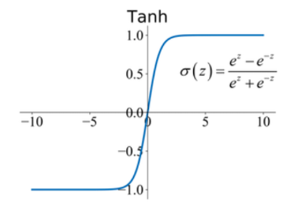
Other common activation functions include ReLU, which outputs positive values and is widely used in deep networks, sigmoid, which squashes values between 0 and 1.
The output of this hidden layer is a 32-number vector, which is a compact summary of “what the model thinks is going on” given the 8 input characters. This hidden state is then passed to the output layer to make the prediction for the next character.
# Hyperparameters for our toy model
vocab_size = len(chars) # number of unique characters
embedding_dim = 16 # size of each character embedding vector
hidden_dim = 32 # size of hidden layer
block_size = 8 # context length (number of previous characters)
# Embedding matrix: maps token IDs -> dense vectors
# Shape: vocab_size x embedding_dim
W_embed = np.random.randn(vocab_size, embedding_dim) * 0.01
# Hidden layer weights: flattened embeddings -> hidden_dim
# Input size = block_size * embedding_dim (all embeddings concatenated)
W1 = np.random.randn(block_size * embedding_dim, hidden_dim) * 0.01
b1 = np.zeros(hidden_dim) # bias for hidden layer
# Output layer: hidden_dim -> vocab_size logits
W2 = np.random.randn(hidden_dim, vocab_size) * 0.01
b2 = np.zeros(vocab_size) # bias for output layer
# Sanity check: print shapes
print("Embedding matrix shape:", W_embed.shape)
print("Hidden layer weight shape:", W1.shape)
print("Output layer weight shape:", W2.shape)The Output Layer: Making a Prediction
The 32-number hidden state gets multiplied by another weight matrix (W2, shaped 32 × 84) to produce 84 numbers — one score for each character in the vocabulary. These raw scores are called logits.
Then we apply softmax, which converts these 84 raw scores into probabilities that sum to 1.0. Now we have a probability distribution: the model's belief about what the next character should be.
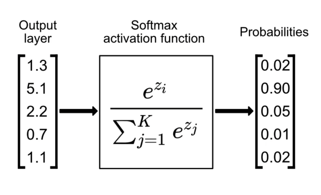
When we first create the model, all weights are random. So the predictions are random too. Here's what our model predicted for the input "THE PROJ" before any training:
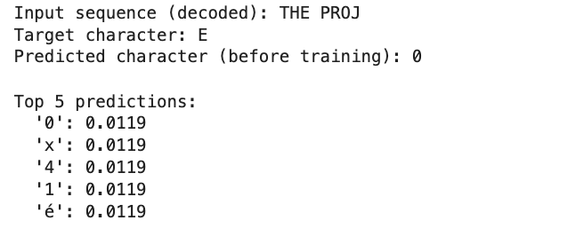
The model’s top 5 guesses were all around 1.19% probability — basically uniform random across all 84 characters. It has no idea what it’s doing yet. That’s about to change.
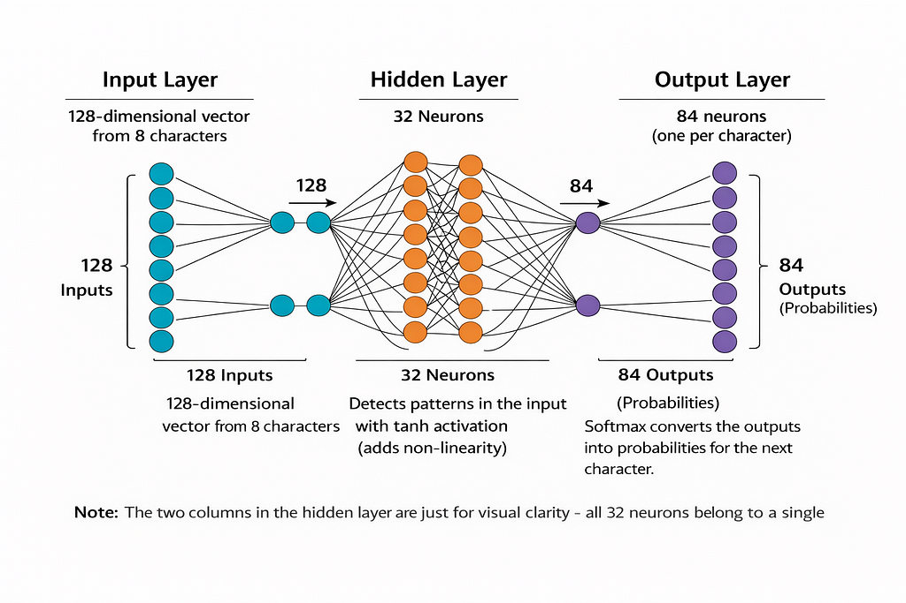
1. The input layer converts 8 characters into a 128-number vector.
2. The single hidden layer has 32 neurons with tanh activation to detect patterns in the input.
3. The output layer has 84 neurons, one for each character in the vocabulary, and uses softmax to predict the next character.
Step 5: The Loss Function (Cross-Entropy Loss) — Measuring How Wrong We Are
Before we can improve the model, we need a way to measure how bad its predictions are.
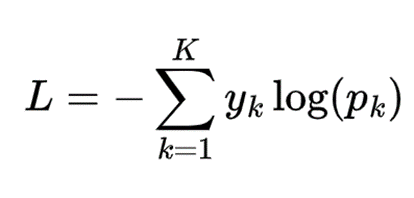
In Python it looks like this:
def cross_entropy_loss(probs, target_id):
return -np.log(probs[target_id] + 1e-9)Here’s the intuition behind cross-entropy loss: if the model gives the correct answer, the loss depends on how confident it was:
- 100% probability → loss = 0.0 (perfect!)
- 50% probability → loss ≈ 0.69
- 10% probability → loss ≈ 2.30
- 1% probability → loss ≈ 4.61 (terrible)
The loss is always non-negative and can theoretically go up to infinity if the model is extremely confident but completely wrong. In short, if the model is confident and right, the loss is low; if it’s confident but wrong, or just uncertain, the loss is high. Cross-entropy measures “how surprised the model is” when it sees the correct answer.
Step 6: Backpropagation — How the Model Learns
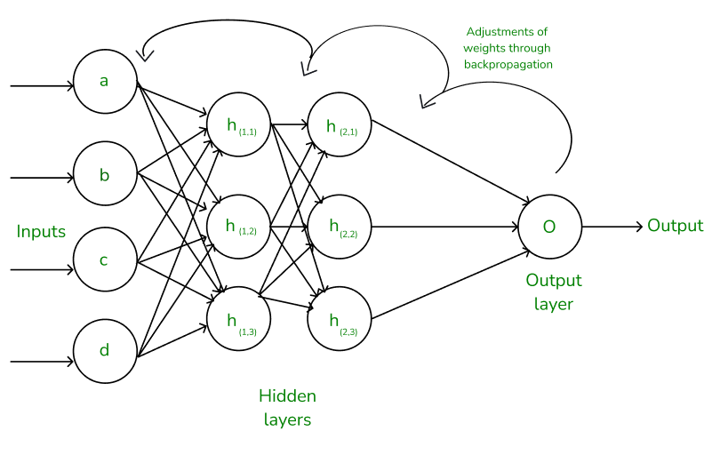
This idea is known as gradient descent. Here’s how it works:
- Forward pass: Feed input through the network, get a prediction
- Compute loss: How wrong was the prediction?
- Backward pass: Figure out which weights caused the error
- Update weights: Nudge them slightly to reduce the error
The Math (Simplified)
After computing the loss, we work backwards through the network using calculus (specifically, the chain rule) to figure out: "If I change this particular weight by a tiny amount, how much does the loss change?"
This gives us a gradient for every single weight in the network — a direction that says "move this way to reduce the error."
Then we update each weight:
new_weight = old_weight - learning_rate × gradientThe learning rate (we used 0.1) controls how big each step is when updating the weights. If it’s too big, the updates might overshoot the optimal values. If it’s too small, learning becomes very slow and could potentially take a very long time or even fail to converge.
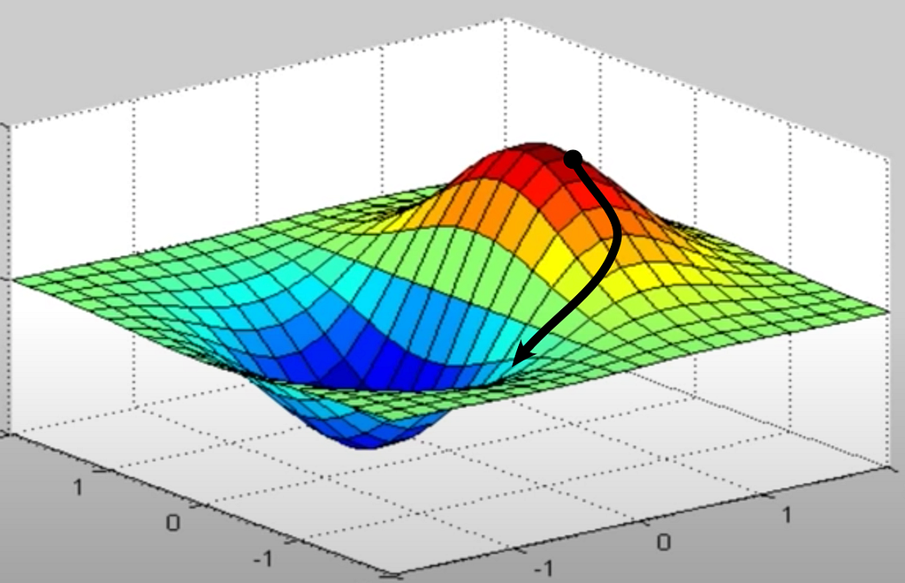
Imagine a hilly landscape where high ground means the model is making bad predictions and low ground means it’s doing well. The model starts somewhere random on this terrain. Each training step, it looks around, figures out which way is downhill, and takes a small step in that direction. Do this thousands of times and it ends up in a valley — the best set of weights it can find. That’s gradient descent.
The Gradients in Our Model
We compute gradients for every component, working backwards:
- Output layer gradients (dW2, db2): How should the final weights change?
- Hidden layer gradients (dW1, db1): How should the pattern-detection weights change? This requires the tanh derivative: 1 - tanh(x)²
- Embedding gradients (dW_embed): How should each character's embedding vector change?
This is done for every single training example — all 419,401 of them — and that's just one epoch (one pass through the data). We did 5 epochs for the small model and 20 for the larger one.
Step 7: Training Results — Watching the Model Learn
Small Model (block_size=8, embedding=16, hidden=32)
We trained for 5 epochs. Here's what happened:
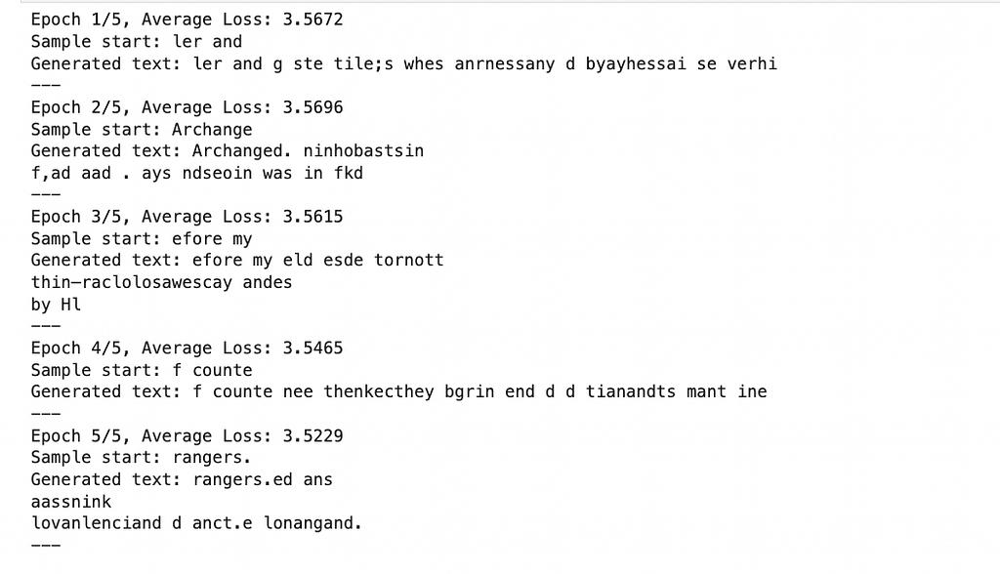
As you can see, it’s mostly gibberish, but looking carefully, after just 5 epochs, some patterns are emerging. The model figured out that spaces go between groups of letters. It learned that ‘th’, ‘an’, and ‘the’ are common combos. It’s starting to produce things that look vaguely like English, but it’s still very rough.
What’s remarkable is that nobody told the model any rules about English. It doesn’t know what a word is. It doesn’t know that vowels exist or that sentences end with periods. All it’s doing is adjusting its weights to minimize the loss function, to be less surprised by the next character, and from that single objective, it’s starting to rediscover the statistical structure of the English language on its own. Spaces are common, so it learned to produce spaces. The letter ‘h’ very often follows ‘t’ in Frankenstein, so the model started putting them together. These aren’t rules it was given. They’re patterns it found by doing 400,000 tiny prediction quizzes, over and over, and adjusting its weights each time to be slightly less wrong.
This is the fundamental insight behind all language models, from our 10,000-parameter toy to GPT-4 with over a trillion: you don’t need to teach the model grammar, spelling, or meaning. You just need to ask it “what comes next?” enough times, and structure emerges from the statistics.
Step 8: Scaling Up the Simple Model — And Watching It Fail
Before jumping to a completely new architecture, we tried the obvious thing: just make the feedforward model bigger. We doubled everything:
- Block size: 8 → 16 (sees twice as much context)
- Embedding dimension: 16 → 32 (richer character representations)
- Hidden layer: 32 → 64 neurons (more pattern detectors)
The model now had roughly 40,000 parameters. We rebuilt the training data with the new context window, reinitialized all weights, and trained for 20 full epochs — four times longer than before.
Here’s what happened:
Epoch Average Loss What We Expected What Actually Happened 1 5.37 Lower than the small model’s 3.57 Much worse 5 5.47 Steady improvement Loss went up 10 5.49 Approaching good output Still climbing 15 5.49 — Plateaued at a terrible value 20 5.46 — Barely budged
The larger model performed dramatically worse than the small one. A loss of 5.46 versus 3.52 means the bigger model’s predictions were significantly further from the truth.
Here’s what the larger model generated after 20 epochs of training:
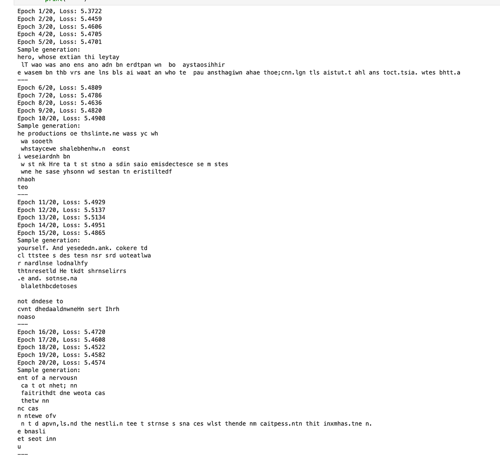
ent of a nervousn
ca t ot nhet; nn
faitrithdt dne weota cas
thetw nn
nc cas
n ntewe ofvThis is worse than the small model after 5 epochs. More capacity, more training time, worse results. What went wrong?
Three things killed the larger model:
Vanilla SGD can’t handle the complexity. Our optimizer — weight -= 0.1 × gradient — applies the same learning rate to every single weight in the network. But in a larger model, some weights need big updates and others need tiny ones. SGD treats them all identically. It's like trying to tune a piano by turning every key the same amount.
Single-example training is too noisy. We updated weights after every single character prediction. Each gradient pointed in a slightly different direction, so the model zigzagged wildly instead of making steady progress. Imagine navigating by asking one person for directions at a time — you’d get contradictory advice and wander in circles.
No normalization. As values flow through more neurons, they can grow exponentially large or shrink to near zero. The small model was shallow enough to get away with this. The larger model wasn’t. Without anything to keep activations in check, the network’s internal signals became unstable.
This failure is one of the most important lessons in machine learning: more parameters don’t help if your training infrastructure can’t support them. The model had the capacity to learn — it just couldn’t figure out how.
This is exactly the problem that transformers were designed to solve.
Part 2: Upgrading to a Transformer
Everything from here on uses the same dataset (Frankenstein, 419,409 characters, 84 unique tokens), the same character-level tokenization, and the same pure NumPy approach. No frameworks, no GPU. What changes is the architecture and everything around it.
Step 9: What Is a Transformer?
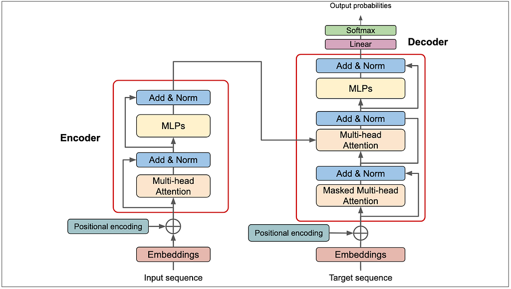
A transformer is a neural network architecture designed to process sequential data — especially language — using a mechanism called self-attention. Unlike older models such as LSTMs or other recurrent neural networks, which read text one token at a time and carry information forward step-by-step, transformers process an entire sequence at once. Each token can directly “look at” every other token in the sequence and decide which ones matter most.
The architecture was introduced in 2017 in the paper “Attention Is All You Need” by researchers at Google Brain. It replaced recurrence entirely with attention, enabling massive parallelization during training and much better modeling of long-range dependencies. Shortly afterward, organizations such as OpenAI and Google built large-scale language models based on this design, including GPT and BERT. Today, nearly every modern large language model including, ChatGPT, Claude, Gemini , is built on the transformer framework.
Here’s what changes between our Part 1 model and the transformer:
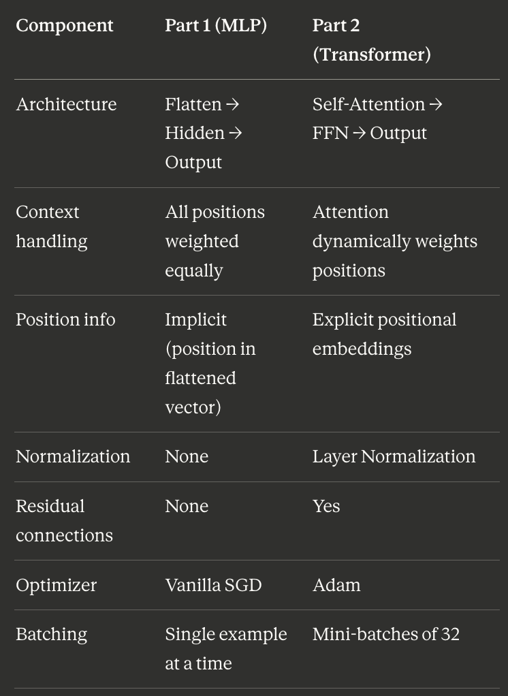
These changes exist to account for the inbability of our simple model to train properly.
Step 10: New Hyperparameters and Training Setup
We keep things small enough to train on a CPU, but this architecture is fundamentally the same as what powers GPT-2 and its descendants:
# Model architecture
block_size = 32 # context window — now 32 characters instead of 16
n_embd = 64 # embedding dimension
n_head = 4 # number of attention heads
n_layer = 2 # number of transformer blocks (depth)
head_dim = 16 # each head operates on n_embd / n_head = 16 dimensions# Training
batch_size = 32 # examples per gradient update
learning_rate = 3e-4 # Adam learning rate (much smaller than SGD's 0.1)The model has 112,980 total parameters — about 3× larger than the scaled-up MLP. But the improvement isn’t just about having more parameters. It’s about how those parameters are organized and how we train them.
Two immediate changes in how we prepare training data:
Mini-batches. Instead of learning from one example at a time, we now process 32 examples simultaneously. Each training step sees 32 × 32 = 1,024 characters at once. Why does this help? Imagine trying to learn the average height of humans by measuring one person at a time. Each measurement bounces you around — tall, short, tall, tall, short. But if you measure 32 people at once and take the average, you get a much smoother signal. That’s exactly what mini-batches do for gradient updates.
Predicting at every position. In Part 1, the model only predicted one character — the one right after the context window. Now, the model predicts the next character at every position in the sequence simultaneously. Given the input “the monster walked into”, it simultaneously predicts:
- After “t” → “h”
- After “th” → “e”
- After “the” → “ “
- After “the “ → “m”
- …and so on for all 32 positions
The target sequence is simply the input shifted right by one character. This gives us 32× more training signal per example — much more efficient.
Step 11: Self-Attention — The Core Innovation
This is the single most important idea in the transformer, and the reason it outperforms the feedforward model by such a wide margin.
The problem with the old model: When the feedforward model saw “the cat sat on t” and needed to predict the next character, it flattened all 16 character embeddings into one long vector: [embedding₁, embedding₂, …, embedding₁₆]. The hidden layer then multiplied this entire vector by a fixed weight matrix. Every position was treated with equal importance. The character in position 1 had exactly the same structural influence as the character in position 16 — the model had no way to say “this nearby character matters more than that distant one.”
What self-attention does: Instead of treating all positions equally, self-attention lets every character look at every other character and dynamically decide how much to pay attention to each one. When the model sees “the cat sat on t” and needs to predict what comes after the final “t,” the “t” might pay heavy attention to “on” (the word it’s completing) and “sat” (common pattern) while mostly ignoring the space from five positions back.
It does this through three projections. Each character produces three vectors:
Query (Q): “What am I looking for?” Each token generates a query vector that represents what information it needs to make its prediction.
Key (K): “What do I contain?” Each token generates a key vector that advertises what information it has to offer.
Value (V): “What information do I pass along?” Each token generates a value vector containing its actual content.
The attention score between two tokens is the dot product of one token’s Query with another token’s Key, divided by √(head_dim) for numerical stability:
Attention(Q, K, V) = softmax(Q · K^T / √d_k) · VHigh dot product = high relevance = pay more attention. After softmax converts these scores into weights that sum to 1, we compute a weighted average of all the Value vectors. The result is a new representation of each token that’s been enriched with information from the tokens it decided were most relevant.
Here’s the core of the attention computation in code:
# Project input to Q, K, V (combined into one matrix for efficiency)
qkv = x @ W_qkv + b_qkv # (B, T, 3*C)
q, k, v = np.split(qkv, 3, axis=-1) # each (B, T, C)# Attention scores: how relevant is each token to each other token?
scale = 1.0 / np.sqrt(head_dim)
att_scores = (q @ k.transpose(0, 1, 3, 2)) * scale # (B, n_head, T, T)# Apply causal mask — block future positions
att_scores = np.where(causal_mask[:T, :T], att_scores, -1e9)# Softmax → attention weights (probabilities)
att_weights = softmax(att_scores, axis=-1)# Weighted combination of values
att_output = att_weights @ vStep 12: The Causal Mask , No Peeking at the Future
There’s one critical constraint on attention. When predicting what character comes at position 5, the model cannot look at positions 6, 7, 8, and beyond. That would be cheating — it could just copy the answer instead of learning to predict it.
We enforce this with a causal mask: a lower-triangular matrix that blocks attention to all future positions. Before applying softmax, we set the attention scores for future positions to negative infinity (-1e9), which pushes their softmax probability to effectively zero.
Position 0: can see [itself]
Position 1: can see [position 0, itself]
Position 2: can see [position 0, position 1, itself]
Position 3: can see [position 0, position 1, position 2, itself]
...
Position 31: can see [all 32 positions]In matrix form, the first 8×8 block of the causal mask looks like:
[[1 0 0 0 0 0 0 0]
[1 1 0 0 0 0 0 0]
[1 1 1 0 0 0 0 0]
[1 1 1 1 0 0 0 0]
[1 1 1 1 1 0 0 0]
[1 1 1 1 1 1 0 0]
[1 1 1 1 1 1 1 0]
[1 1 1 1 1 1 1 1]]A 1 means “can attend to.” A 0 means “blocked.” This is the same masking used in GPT and every other autoregressive language model — the model can only look backwards, never forwards.
Step 13: Multi-Head Attention — Seeing Multiple Patterns at Once
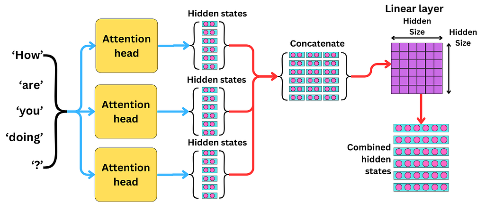
Instead of computing one big attention pattern, we split into 4 independent “heads,” each operating on its own 16-dimensional slice of the 64-dimensional embedding.
Why? A single attention computation can only learn one pattern at a time. Maybe it learns to always look at the previous character. But what if sometimes the model needs to look at the previous character and look at the beginning of the current word and check whether there was a comma recently?
Multi-head attention solves this by running 4 separate attention computations in parallel:
# Reshape from (B, T, 64) to (B, 4_heads, T, 16_dims_per_head)
q = q.reshape(B, T, n_head, head_dim).transpose(0, 2, 1, 3)
k = k.reshape(B, T, n_head, head_dim).transpose(0, 2, 1, 3)
v = v.reshape(B, T, n_head, head_dim).transpose(0, 2, 1, 3)Each head can specialize in a different kind of pattern. After all 4 heads compute their attention independently, we concatenate the results back together and project to the original dimension:
# Concatenate heads: (B, 4, T, 16) → (B, T, 64)
att_output = att_output.transpose(0, 2, 1, 3).reshape(B, T, C)# Output projection back to embedding dimension
out = att_output @ W_out + b_outLater, when we visualize what our trained model actually learned, we’ll see that different heads did indeed specialize — one head learned to focus heavily on the immediately previous character, while others spread their attention more broadly across the context.
Step 14: The Feedforward Network — Processing What Attention Found
After attention gathers relevant context, each token passes through a small two-layer network called the feedforward network (FFN). Think of attention as “gathering the right information from the right places” and the FFN as “thinking about what you gathered.”
The FFN does three things:
- Expand: 64 → 256 dimensions (4× expansion gives the model a larger space to compute in)
- GELU activation: A smooth non-linearity, used in GPT-2 and all modern transformers
- Compress: 256 → 64 dimensions (back to the original embedding size)
def ffn_forward(x, W_fc1, b_fc1, W_fc2, b_fc2):
h = x @ W_fc1 + b_fc1 # Expand: (B, T, 64) → (B, T, 256)
h_act = gelu(h) # Activate
out = h_act @ W_fc2 + b_fc2 # Compress: (B, T, 256) → (B, T, 64)
return outThis expand-then-compress pattern appears in every transformer ever built. The expansion gives the model a higher-dimensional workspace to compute complex functions before projecting the result back to a manageable size.
GELU (Gaussian Error Linear Unit) is the activation function of choice for transformers. Compared to the tanh we used in Part 1, GELU is smoother and doesn’t saturate as aggressively — it gently zeros out negative values while letting positive values pass through mostly unchanged, which helps gradients flow better during backpropagation.
Step 15: Residual Connections and Layer Normalization — Keeping Things Stable
These two techniques are what let us stack multiple transformer blocks on top of each other without the training collapsing — the exact problem that killed our larger MLP.
Residual connections add the input of each sub-layer to its output. Instead of computing:
output = Attention(x)The transformer computes:
output = x + Attention(x)This creates a “highway” for information and gradients. Even if the attention layer produces garbage early in training, the residual connection ensures the original signal isn’t destroyed — it just gets the attention output added on top. And during backpropagation, gradients can flow directly through the addition, bypassing the attention computation entirely. This clean gradient highway is what makes training deep networks possible.
Layer normalization is applied before each sub-layer (before attention, and before the FFN). It takes each token’s embedding vector and normalizes it to have mean = 0 and standard deviation = 1, then scales and shifts with learned parameters:
def layer_norm_forward(x, gamma, beta, eps=1e-5):
mean = x.mean(axis=-1, keepdims=True)
var = x.var(axis=-1, keepdims=True)
x_norm = (x - mean) / np.sqrt(var + eps)
return gamma * x_norm + betaThis prevents values from exploding or vanishing as data passes through multiple layers — the same instability that made the larger MLP fail. The learned gamma and beta parameters let the model undo the normalization where needed, so it doesn’t lose any expressiveness.
Step 16: Positional Embeddings : Teaching Order
The old feedforward model implicitly knew position: character 1 always occupied slots 1–16 of the flattened vector, character 2 occupied slots 17–32, and so on. Position was baked into the structure.
The transformer has no built-in sense of order. The attention mechanism computes scores between all pairs of tokens, but nothing about Q · K^T tells the model where each token sits in the sequence. “the cat” and “cat the” would produce identical attention patterns.
The fix is simple: we add a learned position embedding to each token. The model maintains a table of 32 vectors (one per position), and at the start of the forward pass, we add each position’s vector to its token embedding:
tok_emb = params['wte'][x_ids] # (B, T, 64) — what each character is
pos_emb = params['wpe'][:T] # (T, 64) — where each character sits
x = tok_emb + pos_emb # combine identity + positionDuring training, the model learns that position 0 means “first character,” position 31 means “last character,” and positions in between carry their own spatial meaning. This is identical to how GPT-2 handles positional information.
Step 17: Assembling the Full Transformer
Now we put every piece together. A single transformer block combines attention and FFN with residual connections and layer normalization:
┌─── Transformer Block ─────────────────────────────┐
│ │
│ x ──→ Layer Norm ──→ Self-Attention ──→ + ──→ x │
│ │ ↑ │
│ └─────────────────────────────────────────┘ │
│ │
│ x ──→ Layer Norm ──→ FFN ──→ + ──→ x │
│ │ ↑ │
│ └──────────────────────────────┘ │
│ │
└─────────────────────────────────────────────────────┘The arrows that bypass the main computation and connect directly to the “+” are the residual connections. Layer norm stabilizes the input before each computation.
We stack 2 of these blocks, then apply a final layer normalization and a linear projection to get logits over the vocabulary:
Token IDs
↓
Token Embedding + Position Embedding
↓
┌─── Transformer Block 1 ───────────────────────┐
│ Layer Norm → Self-Attention → Add (residual) │
│ Layer Norm → FFN → Add (residual) │
└────────────────────────────────────────────────┘
↓
┌─── Transformer Block 2 ───────────────────────┐
│ Layer Norm → Self-Attention → Add (residual) │
│ Layer Norm → FFN → Add (residual) │
└────────────────────────────────────────────────┘
↓
Final Layer Norm → Linear Projection → 84 Logits → SoftmaxThe forward pass in code:
def transformer_forward(x_ids, params):
B, T = x_ids.shape # Embeddings: combine token identity + position
tok_emb = params['wte'][x_ids] # what each character is
pos_emb = params['wpe'][:T] # where each character sits
x = tok_emb + pos_emb # Pass through transformer blocks
for layer in range(n_layer):
# Sub-block 1: Attention with residual
residual = x
x_norm = layer_norm(x, gamma1, beta1)
att_out = attention(x_norm, W_qkv, b_qkv, W_out, b_out)
x = residual + att_out # Sub-block 2: FFN with residual
residual = x
x_norm = layer_norm(x, gamma2, beta2)
ffn_out = ffn(x_norm, W_fc1, b_fc1, W_fc2, b_fc2)
x = residual + ffn_out # Final layer norm + output projection
x = layer_norm(x, gamma_f, beta_f)
logits = x @ W_lm_head + b_lm_head # (B, T, 84) return logitsWe tested the forward pass before any training:
Input shape: (4, 32)
Logits shape: (4, 32, 84)
→ 84 scores for each of 32 positions, across 4 batch examples.Before training, the initial loss was 4.4280 — almost exactly -log(1/84) = 4.4308, which is what you’d expect from a model making random predictions across 84 characters. The model has no idea what it’s doing yet. That’s about to change dramatically.
Step 18: The Adam Optimizer — Why SGD Wasn’t Enough
Part 1 used vanilla SGD: weight -= learning_rate × gradient. That's the simplest possible optimizer, and it's what killed the larger model.
Adam is fundamentally smarter. It maintains two running averages for every single weight in the network:
m (momentum): A smoothed version of the gradient direction. If gradients keep pointing the same way across multiple steps, momentum builds up and the optimizer takes bigger steps. If they keep flipping direction, momentum cancels out and the optimizer naturally slows down. This prevents the wild zigzagging that plagued our SGD training.
v (velocity): A smoothed version of the squared gradient. This gives each weight its own adaptive learning rate. Weights that consistently receive large gradients get smaller step sizes (to avoid overshooting). Weights that receive small gradients get larger step sizes (to speed up learning). Instead of one global learning rate for everyone, each of the 112,980 parameters effectively has its own.
class AdamOptimizer:
def step(self, params, grads):
self.t += 1
for key in params:
g = grads[key]
# Smooth the gradient (momentum)
self.m[key] = 0.9 * self.m[key] + 0.1 * g
# Smooth the squared gradient (velocity)
self.v[key] = 0.999 * self.v[key] + 0.001 * g**2
# Bias correction (important early in training)
m_hat = self.m[key] / (1 - 0.9**self.t)
v_hat = self.v[key] / (1 - 0.999**self.t)
# Adaptive update: each weight gets its own effective learning rate
params[key] -= lr * m_hat / (np.sqrt(v_hat) + 1e-8)Nearly every modern neural network uses Adam or a variant. The switch from SGD to Adam is probably the single biggest reason the transformer actually trains.
Step 19: Backpropagation Through a Transformer
Just like in Part 1, the model learns by computing gradients — “which direction should each weight move to reduce the loss?” — and nudging every weight accordingly. But the backward pass through a transformer is significantly more complex.
We still use cross-entropy loss, and the gradient of the loss with respect to the output logits is still the same simple formula: dlogits = probs - one_hot(target). But from there, we have to propagate backwards through:
- The output projection (linear layer)
- Final layer normalization
- For each transformer block (in reverse order):
- The FFN residual connection
- The feedforward network (two linear layers + GELU derivative)
- Layer normalization
- The attention residual connection
- The output projection of attention
- The multi-head attention (through softmax, causal mask, the Q/K/V matmul, and the QKV projection)
- Layer normalization
4. The token and position embeddings
Every single operation has a corresponding gradient computation, and they must execute in exact reverse order. In total, we compute gradients for 30 parameter tensors — compared to just 5 in Part 1.
This is where frameworks like PyTorch earn their keep: they compute all of these gradients automatically. We did it by hand. The backward pass for attention alone — propagating through softmax, the causal mask, the scaled dot product, and the multi-head reshape — is the most mathematically involved part of the entire project.
Step 20: Training Results — Night and Day
We trained the transformer for 3,000 steps. Each step processes a mini-batch of 32 sequences of 32 characters each (1,024 tokens per step). Here’s what happened:
Step Average Loss Elapsed Time Observation 500 2.70 33s Already well below the MLP’s best 1,000 2.19 67s Rapid, steady improvement 1,500 2.01 101s Still dropping smoothly 2,000 1.90 165s Real words appearing 2,500 1.83 200s Grammar patterns emerging 3,000 1.75 551s Clear English structure
The loss dropped smoothly from 4.43 (random guessing) to 1.75. No bouncing, no plateaus, no going backwards. Compare this to the MLP: the best loss from Part 1 was 3.52 after 5 full epochs — the transformer reached literally half that in about 9 minutes.
A loss of 1.75 means the model assigns roughly 17% probability to the correct next character on average, compared to 1.2% from random guessing. That’s a 14× improvement.
Let’s watch the generated text evolve:
Step 1,000:
The of the cespertion, the che my thid che the bears wer ive with
the the sprere the wids willl to me thin, was a wa the the bof she of thas o
and affer thAlready forming word-like structures with spaces and common words like “the”, “with”, “was”. The model figured out English word boundaries in under two minutes of training.
Step 2,000:
The prection a that whe pas the
ase to sthe was was the care he mow fard in
that when ther with wore more in of the cantere and the suct I she at brestReal English words appearing: “when”, “with”, “more”, “care”, “that”. Sentence-like structure is emerging. The model is using articles (“the”, “a”) before nouns and prepositions (“in”, “of”, “to”) to connect phrases.
Step 3,000:
The time, and my and ceased firtung to here
exclect of the thun in had firstoratin tall and was she he spront a she houl
d but spiting and oble succove toComplex patterns: commas separating clauses, “and” conjunctions, words like “ceased” and “firstoratin” (attempting “frustration”?). The model is clearly learning English structure at a level the feedforward model never approached.
Compare directly against the feedforward model’s best output after 20 epochs:
ent of a nervousn
ca t ot nhet; nn
faitrithdt dne weota casThe difference is drastic.
Step 21: Generation Settings — Temperature and Sampling
Like Part 1, we control text generation with temperature and top-k sampling. But the transformer’s outputs are much richer and more interesting to experiment with.
Temperature controls randomness by scaling the logits before softmax. Lower temperature makes the probability distribution sharper (the model commits harder to its top choices). Higher temperature makes it flatter (more random, more creative).
Top-k filtering restricts sampling to only the k most likely characters, zeroing out everything else. This prevents very unlikely characters from being chosen.
We generated from the same prompt — “I felt a sensation” — with three settings:
Conservative (temperature=0.5, top_k=5):
I felt a sensation of the sounte all was the was one my and the have was and
my had feeling to the are was and with the so the seat wind to the tee accur
ded to with hat sterely and and happess to me of the montinure waRepetitive but grammatically structured. The model plays it safe, producing lots of common words (“the”, “was”, “and”) and rarely taking risks. Notice it still produces sentence-like patterns with proper spacing and punctuation.
Balanced (temperature=0.8, top_k=10):
I felt a sensation. I then bours and, as in to the cottide of to these of my
felt he conting my some that tempted to me my for almany of to the
ammented all be in one appecas, my been his sward on theMore varied vocabulary. “tempted”, “appecas” (attempts?), proper punctuation with periods and commas. The model is taking more risks and producing more diverse output.
Creative (temperature=1.2, top_k=20):
I felt a sensation, and in
youis id than
dook satcerfulsh herough firibled no seath, forwards to mide
upon exclive hechsed.h.".
But I
passedliefy ir, pigh."Wild and creative — inventing words like “satcerfulsh” and “firibled.” The punctuation gets experimental too, with nested quotes and exclamation-like patterns. It’s reminiscent of how Shelley might sound if she were writing in a fever dream.
Step 22: Peeking Inside — Attention Visualization
One of the most powerful advantages of transformers over black-box models is that we can look inside and see what the model learned to pay attention to.
We fed in “the monster walked into” and checked what the last character (‘o’) was attending to across all four heads in Layer 0:
Head 0: 'o'(0.488) 'n'(0.130) 'i'(0.128) ' '(0.113) 't'(0.056)
Head 1: 't'(0.728) 'n'(0.207) 'o'(0.032) 'd'(0.013) ' '(0.013)
Head 2: 't'(0.519) 'o'(0.230) 'n'(0.127) 'i'(0.047) ' '(0.026)
Head 3: 't'(0.316) 'o'(0.130) 'n'(0.111) 'd'(0.105) 'k'(0.096)The heads specialized, which is exactly what multi-head attention is designed to do:
Head 0 focuses primarily on the current character itself (‘o’ at 49%) and spreads the remaining attention broadly. It seems to be a “local context” head.
Head 1 puts a massive 73% of its attention on ‘t’ — the character immediately before ‘o’ in “into”. This head learned that the previous character is critical for predicting what comes next, essentially learning local letter patterns and bigram statistics.
Heads 2 and 3 show a mix: they attend heavily to ‘t’ but also distribute attention across ‘o’, ’n’, and other characters. They appear to be tracking the broader word context.
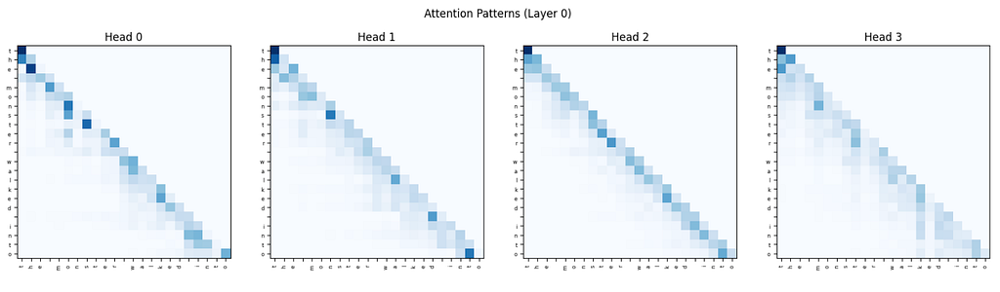
Each cell is how much one character is paying attention to another. The y-axis is the character doing the looking, the x-axis is what it’s looking at. Darker blue means more attention.
So in Head 1, if you look at the ‘o’ row, it’s almost entirely dark on the ‘t’ column. That means ‘o’ is putting most of its attention on the ‘t’ right before it. In Head 0, that same row is spread across multiple columns, meaning ‘o’ is pulling information from several characters at once.
Each row sums to 1 (because of softmax), so it’s a probability distribution: “I’m at this character, how should I split my attention across everything I can see?”
What Separates This From GPT-4
Our transformer and GPT-4 share the same design. The self-attention, the residual connections, the layer norms, the Adam optimizer, the softmax over vocabulary, the cross-entropy loss, it’s all the same math.
The difference is scale:
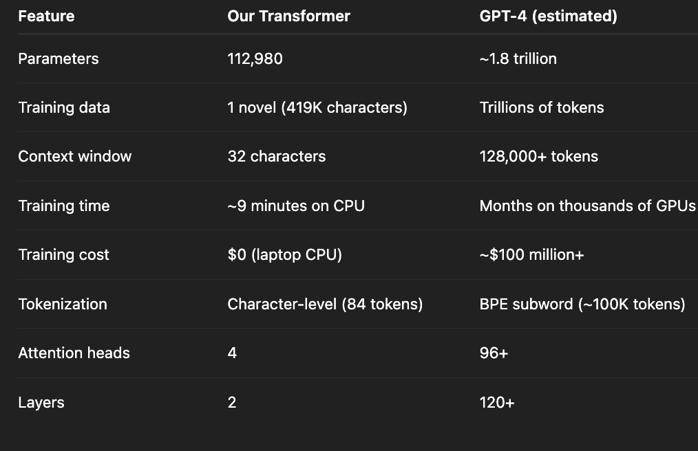
Our model is roughly 16 million times smaller than GPT-4. We ran on a laptop CPU for 9 minutes. GPT-4’s training reportedly cost over $100 million in compute, running on thousands of GPUs for months.
But strip all of that away and the core loop is identical: see some text, predict the next token, measure how wrong you were, adjust the weights, repeat. Understanding how our model learns that ‘h’ often follows ‘t’ is the same conceptual step as understanding how GPT-4 learns to write legal briefs. Scale is what turns character-level statistics into what looks like intelligence.
This project was built with just NumPy. We didn’t use PyTorch, TensorFlow, autograd, GPU, or pre-trained weights.
The full code is available as a Jupyter notebook. The transformer model trains in under 10 minutes on any modern laptop and produces text that demonstrates that the machine has learned something real about the structure of English.
This is the foundation of every modern AI system. I warmly welcome any feedback you may have about this project.
I can be reached at maxmatkovski [at] gmail [dot] com.